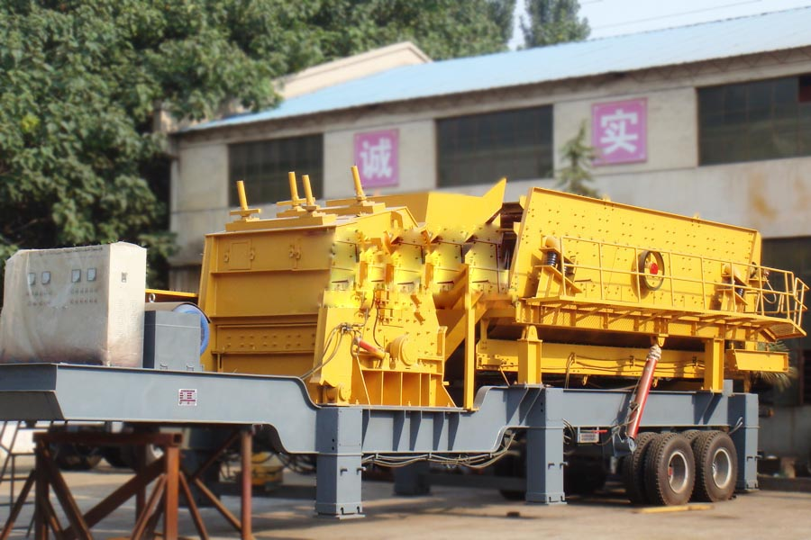
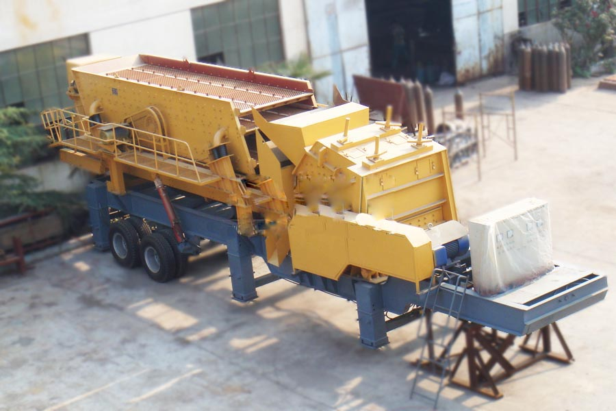

- Home >
- stone crusher >
- mobile impact crusher station

Construction waste crushing production line

Mobile construction waste crushing station for urban construction waste crushing.
mobile impact crusher station
Impact mobile crushing station Products
Impact mobile crusher station is mainly used in metallurgy, chemicals, building materials, utilities and other materials often need to move processing operations, especially for highways, railways, hydropower engineering and other stone work flow. Different users depending on the type, size and finished material processing of raw materials required by using a variety of configurations.

The impact of moving the company’s crushing plant, provide you with comprehensive technical support. Crushing stations are configured according to the site survey the situation on the ground or actual customer requirements for customers designed, fully embodies the rationality of design, effectiveness, applicability, large capacity, low wear, low operating costs of its notable features. Strong technical strength and improve the service system is reassure customers purchase and use of the guarantee. Depending on the process requirements, the combination of various types of equipment to meet customers’ different process requirements.
Impact mobile crushing plant structures
Impact mobile crushing station all parts of airborne, comprising: a solid frame, crusher, feeder, vibrating screen, conveyor belts, motors and control boxes.
Impact mobile crushing station Features
1, good mobility;
2, compact, easy to use;
3, cost savings, reduce costs;
4, higher applicability;
5, stable performance, easy maintenance;
6, flexible configuration
Impact mobile crushing station technical parameters
| Model |
Vibratory screening model |
Crusher Model | Discharge Conveyor Model | Back feed belt Model 1 | Back feed belt Model 2 |
Shipping size (L×W×H)(mm) |
Tire configuration |
| YDS50 | 4YA1235 | PF¬1007 | B650×7M | B650×9M | B650×5M | 10800×2480×4170 | Biaxial |
| YDS70 | 4YA1545 | PF¬1010 | B800×7M | B800×10M | B800×6M | 12200×2743×4200 | Biaxial |
| YDS100 | 4YA1548 | PF¬1214 | B1000×10M | B1000×10M | B1000×6M | 12500×2900×4200 | Biaxial |
| YDS180 | 3YA1848 | PF¬1315 | B1000×11M | B10000×9M | B1000×7M | 13000×3100×4300 | Triaxial |

Impact mobile crushing plant works
Material through the feeder evenly transported to the crusher, impact crusher preliminary crushed by a round shaker constitute a closed system, to achieve recycling materials broken, finished material by the conveyor output, continuous crushing operations. Counterattack mobile crusher according to the actual production of circular vibrating screen needs to be removed to realize the material directly preliminary crushing, convenience and other crushing equipment for use and flexible.
Leave Me A Message, Now
If you have any questions regarding equipment prices, production line configuration or other problems, you can send a message to us, we will contact you soon.